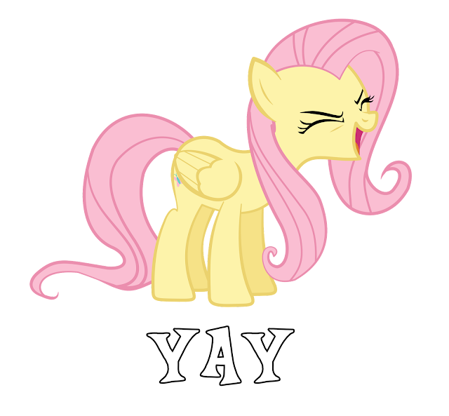
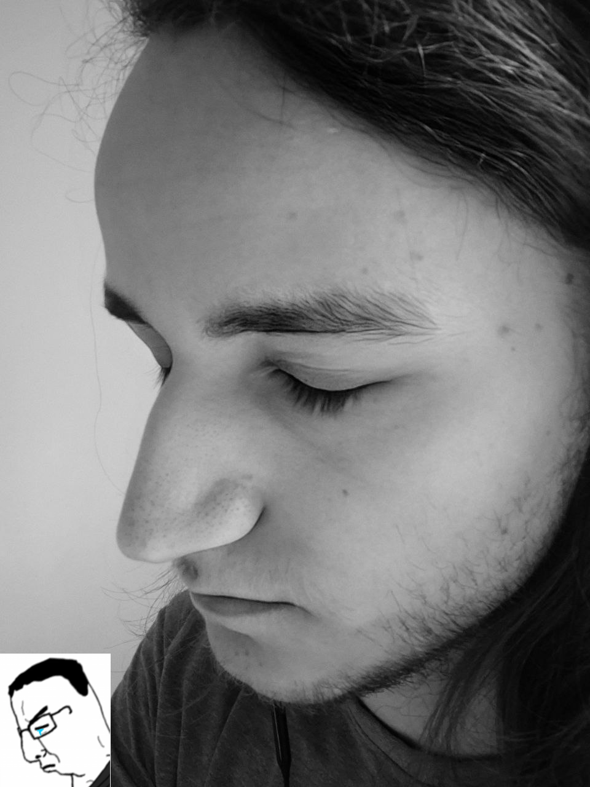
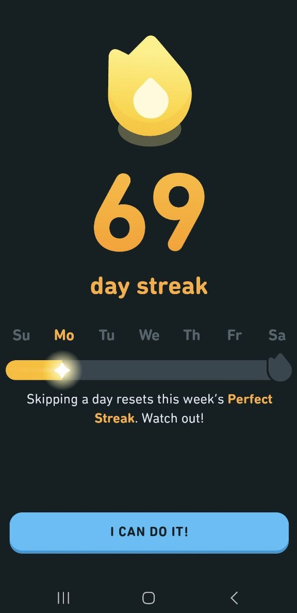
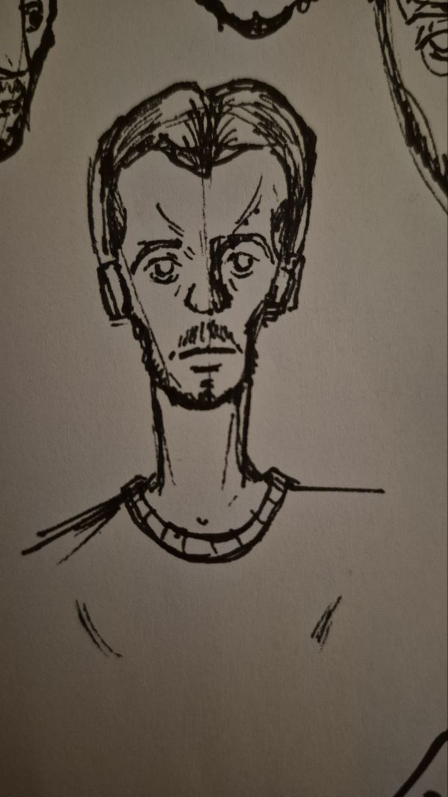

2025-11-10
15-років My Little Pony: Friendship is Magic
з вчорашнім святом, еверіпоні! Одному з найважливіших для мене мультсеріалів виповнилось учора 15 років!
2025-28-07
Фото
коли робив фото-референс і випадково зрозумів, що західна цивілізація пала -- мільйони мають померти
2025-27-07
Про Валентина Стрикала
Я недавно переслуховував кілька пісень з альбому "Смирись и расслабься!" і хоча більшість з них просто рофляні по типу "Кайен" або "Песня для девочек", але от переслуховуючи такі пісні як "Рустем" та "Gay Porn" в мене виникла думка, що перший альбом Стрикала має дуже дивну меланхолійну атмосферу, відмінну від альбомів "Часть чего-то большего" та "Развлечение". Коли такі пісні як "Ты не такая", "Бесполезно", "Кладбище самолетов" і тд меланхолійні напряму, то перший альбом неначе написаний від обличчя людини, що боїться бути щирою та так ніби приховує свій сум за жартами.
2025-20-07
Огляд Першого Сезону "Beastars"
Кілька місяців назад вийшов третій сезон аніме "Beastars", і зараз я хочу передивитись перші два сезони, щоб бути готовим до третього. Bestars є доволі важливим мультсеріалом для мене, не сказати, що він є моїм улюбленим, проте він мені дуже подобається, і точно посідає своє місце серед мультсеріалів, котрі вплинули на мене. Також у мене багато приємних спогадів пов'язаних з першим сезоном цього серіалу. Я говорю саме про перший сезон, оскільки з другим в мене дуже дивна історія, оскільки я його абсолютно не пам'ятаю, хоча його точно дивився.
Я обожнюю режисуру цього серіалу. Я б навіть наважився порівняти її з "Breaking Bad". Те як режисер візуалізує почутя і думки героїв є просто приголомшливим.
Вступна сцена є хорошою демонстрацією того про що я кажу. Сцена вбивства Тема є освітленою криваво червоним місяцем. В сцени дуже красиво підібрана червоно-фіолетева (майже компліментарна) палітра. З багатьма цікавими рішеннями режисера, так наприклад коли Тем пробігає повз місяць. Кадри швидко змінюються, камера є динамічною. Після цього сцена переходить у темряву, у якій герої та об'єкти подібно cell-shading'у мають обведені краї в тіні, що є креативним рішенням щодо того як показати темряву в кіно. Пізніше включається прожектор, створюючи дуже сильний та неприємний контраст. На презентації, яку транслює прожектор, йшлось про дружбу між видами, після чого хижак з'їдає Тема. Кожне рішення в цій сцені дає нам зрозуміти основний конфлікт сетингу та історії.
Я не дарма згадував кольори при оповіді про минуло сцену, оскільки "Beastars" вправно використовує їх, асоціюючу їх з емоціями персонажів. Так наприклад червоний колір асоціюється з хижістю у серіалі, саме червоний місяць був у сцені вбивства Тема, очі Леґосі були саме червоного кольору при першому нападі на Хал, коли нам показують "здичавіння" Леґосі це показано через "загорання" саме червоних вен, при візуалізації нюху все що пов'язано зі здобиччю має червоний запах, як і чорний ринок м'яса. Також костюм смерті у виставі є червоним, що на мою думку, відображає характер Луї, що будучи "жертвою" зовні намагається імітувати "хижака". В додаток до цього хотів підмітити, що дизайн Леґосі відображає його натуру, тим, що його хутро є сіро-синім (комплементарним до червоного) і він надає перевагу синьому в своєму одязі.
Також велику роль в серіалі грає фіолетовий колір, який також з'являвся у першій сцені на Темі. Він також з'являється в сцені обіду з Хал, в флешбеку Хал намальованому аквареллю переважна більшість кольорів синьо-фіолетові, та у сцені де Леґосі та Хал сплять разом. В усіх цих сценах він використаний навмисно, і на мою думку він пов'язаний з жертвами та небезпекою, адже це також колір запаху Хал у серіалі. Хоч це може прозвучати трохи претенціозно, але мені подобається думати, що таке освітлення в сцені в готелі має на миті передати, що Леґосі відчуває себе як жертва власних інстинктів.
Колір серед режисерських прийомів є лише верхівкою айсбергу. Мені дуже подобається як нам часто візуалізують внутряшній монолог героїв з допомогою неначе маски їхнього обличчя, через яку ми бачимо події, що відбуваються в сцені. Також використання таких речей як голандські кути (наприклад у сцені конфронтації з Білом у туалеті), динамічні прольоти камери у сценах бійок, паралельний монтаж і багато іншого. Одна з речей, що мені дуже сподобались у серіалі -- він не соромиться бути анімаційним. Я розумію ті ходи, котрі використовує "Beastars" можливо б не дивились доречно у більш похмурому серіалі, проте умовно порівнюючи з "Атакою Титанів", через його "доречність" в нього набагато більша кількість засобів візуальної мови. Він наприклад не боїться візуалізувати нам почуття героїв з допомогою вставок, більш експресивно і напряму (сцена обіду з Хал, або "рух по ескалатору" - є хорошими прикладами того про що я кажу). Також серіал дуже любить експерментувати з різними типами анімації, так у першому сезоні ми мали: акварельну 2D анімацію, цифрову 2D анімацію, 3D та Стоп-моушен.
Я б міг би і надалі хвалити серіал, проте узагальнюючи я б хотів сказати, що у візуальному плані в ньому дуже багато продуманих мілких деталей, котрі в сумі залишають неймовірно приємне враження про режисуру.
Сценарій серіалу є його менш однозначною стороною для мене.
Найбільшою його проблемою на мою думку є несконцентрованість та непов'язаність. Я маю на увазі -- події у серіалі не йдуть послідовно, як це зазвичай відбувається у хорошому кіно, коли подія А приводить нас до події Б, оскільки персонаж зробив рішення В. У Beastars дуже багато моментів, які просто відбуваються незалежно від героїв, і переважно пізніше ні до чого не приводять по великому рахунку у фіналі. Наприклад вбивство Тема, хоча і є хорошим вступом, але пізніше про розслідування цієї справи просто забувається. У фіналі сезону про нього не було ані слова, і впродовж сезону ми ні на крок не просунулись розумінні хто є його вбивцею. Також наприклад арка театральної вистави та бійки між Білом та Леґосі, та по-факту приниження Біла з сторони Луї також є повністю замнутою в кінцівці. Похід театральної групи у місто та її візит на Чорний Ринок також стається З(!) головним героєм, а не витікає з його минулих дій. У фіналі викрадення Хал відбувається максимально ніяково, і не підв'язано ні до чого, таким чином, що Леґосі навіть не стає першим хто про це дізнається. Загалом пишучи цей текст мені було тяжко згадати повністю правильну послідовність подій, оскільки перший сезон Beastars відчувається як екранізації кількох різних коміксних арок, що пов'язані спільним наскрізним сюжетом, що я підозрюю так і є, оскільки це екранізація манги.
І я усвідомлюю, що у всіх сценаріях присутня доля подій, які є просто випадками і що оскільки герої є школярами це достатньо виправдано, що їх просто штовхають до тих чи інших подій, проте я б хотів би більше проактивних дій героїв та більше тяглості і зв'язаності в сценарії. Наприклад, якщо б мені була б честь переписувати сцену викрадення Хал, я б переніс би її у вечірній час. Я б дав Хал мотивацію лишитись на місці підготовки фестивалю, наприклад заради того, щоб поговорити з Леґосі коли не буде "людей" довкола. Вони б могли б обговорити так і не закриту в першому сезоні проблему любовного трикутника між нею, Леґосі та Луї. Наприклад вони могли б посваритись через це, через що Леґосі пішов би подалі від Хал, в цей момент її би викрали (як нам і говорили про небезпеку для травоїдних у вечірній час), Леґосі був би першим хто про це дізнався, в нього б з'явилась додаткова мотивація, оскільки це частково його провина, що Хал би лишилась, і це також було би саме рішення Хал наразити себе на небезпеку заради Леґосі, що б розкрило її як персонажа. Подальші події були б такі як є серіалі. В моїй версії не лишилось нахабності дій лев'ячої мафії у викраденні посеред дня як в оригіналі, проте я думаю залишення ними візитки є достатнім.
Також є мілкі питання до логіки в деяких моментах. Наприклад чому гризуни та інші мілкі тварини не мають окремої їдальні, або класів, наприклад в "Зоотрополісі" в маленьких тварин були власні райони, тут нам напрямо показують в одній з сцен як студент ледь випадково не розчавив іншого. Також чому коли Леґосі, щов втекти від Чорного Ринку побіг ЧЕРЕЗ нього, хоча нічого йому не заважало просто розвернутись і піти по сходах, якими вони туди прийшли.
Хоча мені загалом подобаються як написані діа- та монологи в цьому серіалі, проте не можу не підмітити, що внутряшні монологи персонажів часто є надлишковивими і розжовують очевидні речі. Наприклад у сцені обіду з Хал камера кілька раз акцентується на рухах ноги, які вона робить при розмові, і я подумав, що це дуже розумна деталь, що показує її страх в цій сцені, попри її усмішку, та після цього йде внутряшній діалог, який розжовує цю інформацію. У цілому мені здається багато проговорених в серіалі речей можна було спробувати показати з допомогою візуальної мови, тим паче наскільи вправна і різноманітна вона є у творі.
З позитивного мені дуже сподобалось як вони почали знайомство з головним героєм в першій серії з очей оточуючих, а особливо травоїдних. Це дуже гарна наочна демонстрація небезпеки, яку істоти відчувають по відношенню до хижаків
Хоча я й попісочив сценарій, але "Видатних Звірів" можна однозначно похвалити за персонажів. Усі вони дуже яскраві, мають арки, і є детально розкритими.
Леґосі має дуже цікавий внутряшній конфлікт, який і є основним у першому сезоні. Він будучи закоханим в кролицю не може позбутися своєї хижацької натури, що в момент їхньої першої зустрічі змушує його напастити та ледь не вбити її. Впродовж сезону він розвивається та намагається заглушити свою природу, щоб бути з нею. Він проходить арку дорослішання, на початку він бачить вихід у ігноруванні та подавлені своєї хижості, та впродовж сезону він навчається її контролювати, та це в кінці і стає тим, що допомагає йому врятувати його кохану.
Луї з іншої сторони є травоїдним, який намагається перейняти повадки хижаків, щоб здаватись ззовні впевненим та залякуючим. Нам показали його передісторію у флешбеку, і показали, що його минуле не дає йому спокою і через стільки років. Також мені сподобалась сцена в якій він змушений вибрати між Хал та своєю домовленістю з Мером, це наряду з аркою театру показує характер персонажа. Проте він також проходить коротку арку коли в кінцівці все ж жертвує посадою заради того щоб урятувати Хал.
Сама ж Хал також є дуже цікавим персонажем. Вона як мала кролиця, яка постійно стикається з цькуванням в свою сторону, знайшла розраду в зляганні з іншими студентами, щоб відчувати себе рівною. Дуже чітко видно як на неї впливає суспільство. Так у останній сцені першого сезону вона роздумує що скажуть "люди" про їхню пару. Очевидно, що її сумніви також вкоріненні у низькій самооцінці та страсі нашкодити комусь, так частково її небажання вступати в стосунки з Леґосі змотивовані її небажанням поранити особу, яка вперше по-справжньому її кохає.
Твір підіймає багато тем, такі як: дружба, нетерпимість, дорослішання і тд. Проте мене найбільше цікавить дослідження теми кохання і його протиставлення інстинктам особи. Я насправді ще при першому перегляді у 2020-му році придумав цю інтерпритацію, і я вважаю її доволі реалістичною. На мою думку "Beastars" досліджує наскільки платонічним може бути кохання. Перекладаючи його основну метафору інстиктів та почутів на наш світ автор напевно роздумує на тему сексуальної природи людини та її протиставлення почуттям закоханості. Кохання загалом є дуже суперечливим почуттям, оскільки хоча воно і є високим почуттям, що штовхає людей на альтруїстичні вчинки заради блага інших людей, проте водночас воно спричинене дуже низькою базовою людською жагою до розмноження. Тому боротьбу та шлях дорослішання Леґосі можна сприймати як усвідомлення ним істиного кохання. Так якщо ми беремо його хижу природу, що впершу чергу штовхнула його до зближення з Хал, як статевий потяг людини, то в першій частині твору він не може усвідомити свої почуття, пізніше намгається повністю подавити свої інстинкти, щоб бути з особою до якої в нього платонічні почуття, пізніше він приймає, що одне неможливе без другого, і не заперечує свою натуру, а навчається її контролювати, і у фінальному діалозі першого сезону клянеться, що буде сильнішим. У підтримку цієї теорії слугує діалог між ним та Білом в одній з серій, Біл розповідає про сраку своєї дівчини, в той час як Леґосі дивиться на милу закохану пару за сусіднім столиком. Пізніше Біл приведе групу на чорний ринок, також він в одній з серій використовував кролячу кров, і в обох ситуаціях Леґосі протестував, що мені здається підтверджує цей зв'язок у метафорі хижацьких інстинктів та статеворго потягу. Якщо дивитись на серіал з цього боку, то ринок "м'яса" можна сприймати як метафору на проституцію, яка так само "вбиває" гідність особи, в підтримку цієї тези можна навести сцену Хал та лева голови Сі-Сі Гумі. Якщо моя трактовка є правильною, то мені подобається романтична ідея, яку доносить серіал, що хоча неможливо позбутись нашої низької людської природи, але справжнє кохання існує і за нього варто боротись.
Музика також дуже гарна. Вона завжди пасує сценам в яких грає, вона дуже різноманітна та передає почуття сцен. Приємно помічати, що у персонажів є Лейтмотиви та власні музичні теми. Також я просто закоханий в музику з заставки серіалу (так само як у заставку першого сезону в цілому)
Анімація дуже красива та енергійна, персонажі дуже експресивні, їхні рухи живі та плавні. В мене немає жодних нарікань. Дизайн персонажів тут я взагалі вважаю одною з найкращих стилізацій антропоморфних тварин. Хоча я можу бути необ'єктивним по відношенню до візуалу, оскільки загалом дуже люблю антропоморфних тварин. У загальному візуал шикарний, особливо як для трьохвимірного аніме.
Озвучка також хороша. Я не маю багато що про неї сказати, проте персонажі звучать приємно та живо. (Я дивився Японською з Українськими субтитрами P.S дякую Нетфліксу за укр. субтитри).
Загалом я лишився під дуже приємним враженням від серіалу.
2025-06-07
Комікс про Стопи
Якщо що, в мене немає такого буржуазного екранника, я працюю на пролетарській дошці.
А у загальному -- так, в процесі вивчення частин тіла я роблю 3D її модель, роблю turn-around, багато малюю, роблю gesture drawings цієї частини тіла та, чим і є цей комікс, роблю одну "повноцінну" роботу. Так, наприклад, мій малюнок наших з Францом псів у майні був моєю "курсовою" з теми вивчення собак. І так я усвідомлюю, що зі сторони останні два тижні я напевно виглядав як фут фетишист XD
2025-19-06
¿Que es obo?
Я тільки недавно дізнався як буде "прапор" іспанською. Прикиньте "прапор Бандери" буде "Bandera de Bandera" хахахах
2025-19-06
trece
Sí, quiero estudiar Español, pero no tengo dinero (y tiempo) (y no soy inteligente tambien)
2025-08-06
Wake up, babe, в Миколая Олексійовича стрім сьогодні
вибачте, що так довго нічого не постив, просто всяке в житті відбувалось. Та й чесно мені давно не було що прям жостко сказати чи показати. Але от маленький потретик найкращого стрімера укр ютубу ХД
2024-11-10
"Дикий Робот" повернув мене у 2016-ий! (у найгіршому значенні з можливих)
Я тільки що повернувся з кінотеатру, йдучи додому все що я відчував була гіркота у роті від того наскільки цей мультфільм болюче посередній.
Я оминув будь-які спойлери, трейлери чи огляди, тож йшов з загалом сприятливим для фільму настроєм, але, чесно кажучи, тепер розумію, що міг би й не паритись, фільм настільки передбачуваний, що в ньому немає що спойлерити. Скільки раз ви бачили історію про "рибу з води", і історію про те як от в персонажа ніхто не вірить на початку, його цькують, а потім він стає неймовірно крутим, і рятує всіх і його починають всі любити. Чи те як головного героя спершу ніхто не долюблює, але він через свою доброту всіх закохує у себе? Відповідь: Безліч.
Саме клішованість цього мультфільму неначе повертає мене у 2016-ий. Я вже можу уявити ютуб огляди на цей мультфільм під "Dr.Dre -- What's the Difference (Instrumental)" (під що я і рекомендую читати наступний текст). Їй Богу, я певен, ви можете просто перемонтувати огляди на "Турбо" 2013-го року, цієї ж студії, щоб створити рецензію на "Дикий Робот". Особисто я вгадав кінцівку фільму десь на 30-й хвилині.
Також у сюжеті просто багато дір. Саме основне, що в кінцівці хижаки та травоїдні просто перестали їсти один одного. WTF?. На початку фільму нам чітко показали, що це дика природа, де вони атакують і, навіть вміру графічно, показали, що вони пожирають один одного. Впродовж всього першого акту фільму нам чітко показують, що харчовий ланцюг справно працює у цьому світі. Пізніше у фільмі звірі домовляються не ласувати один одним в спільній оселі, щоб пережити зиму, але після цього вони просто перестають.
Також зміна думки головної героїні наприкінці фільму, коли та здається компанії, але після цього різко вирішує, що більше не хоче цього також залишається загадкою для мене. Так, вона почула як її гукає її чоловік та дитина, але вона, блять, сама свідомо їх залишила, навіть не попрощавшись. Люди які заргументують, що це через *емоції*, можуть піти нахуй, те що в робота почались місячні і вона того себе повела як сука, в рази краще пояснення, ніж ця хуйня.
Окрім цього, головна героїня вбила мати свого прийомного сина і всім насрати. Буквально, про це не буде ані слова у кінцівці мультфільму. При чому кіно не повністю ігнорує це, на середині фільму ми отримуємо одну(!) сцену де цей син-гусак це дізнається, -- і йому похуй. Серйозно, проходить одна сцена і все персонажі просто про це забувають. СУКА, хто так сценарій пише, блять, цей малий мав більше ресентименту в сторону прийомної матері коли вона намагалась захистити його від цькувальників, ніж коли він дізнався, що та зробила його сиротою. Випадково, не випадково, нах це сюда вставили, якщо це ні до чого не приводить.
Персонажі нормальні загалом. Всі претензії в мене до напевно найкращого перса в цьому мульті, до лиса Шнира. Він хоч якось виділявся на тлі клішованого "Мудрого Наставника" і "Гидкого Каченяти" (буквально). Наскільки я зрозумів, фільм натякає, що він втратив матір на сцені де вони читають казку, що цікаво. Проте весь фільм мене не покидало почуття, що 2016-ий дзвонив, просив свого хитрого, язикатого, цинічного, м'якого у середині антропоморфного лиса забрати. (так "Зоотрополісу" вже 8 років).
Анімація -- нормальна. Як "Кіт в Чоботях: Останнє Бажання", але режисура менш вигадлива.
Не раджу йти на цей фільм в кіно, оскільки це фільм для мамок, які припхають своїх беззубих виродків, що оруть і ґеґочуть чверть фільму. Того йобана п'ята частина мультфільму забита або сльозовижимаючими моментами для таких, або уті-путі милими малюками.Та й фільм, що я, блять, дізнався в процесі написання цього тексту, вже злили разом з укр озвучкою. Чесно мені здалось, що йдучи додому я пропустив цікавіші історії, ніж на екрані: якесь п'яне бидло гарчало на охоронців кінотеатру коли я виходив, і якийсь чувак підозріло виправдовувся, що "Кишка свині дуже схожа на людську" (Хохліка спіймали на гарячому видно)
Почитайте краще Франц Кафка "Перетворення" замість цього кіна, бля.
2024-11-3
Бля, так бісять голі баби у кліпах
Я недавно дивився Топ найпопулярніших пісень нульових у Європі, і типу там ця штука, що мене завжди бісила в величезній купі кліпів вже давно. Постійно з'являються якісь жінки у відвертому одязі\напівголі, роблять якісь квазі- або відверто сексуальні речі. Мене це натурально бісить, бо постійно така ситуація, що слухаєш пісню, вона тобі подобається, дивишся кліп, а там весь цей несмак. (От серйозно послухайте пісню "Oh Love" -- Green Day, уявіть як би виглядав кліп до цієї пісні абстрагуючись від мого тексту, і гляньте кліп). І серйозно найгірше коли ти дивишся кліп заради пісні, а твій екран бачить ще хтось і бачить цю всю хуйню.
І я не ханжа, я розумію, що секс, як і насильство, -- це один з інструментів у мистецтві, один з 'примітивних тригерів'. І точно не мені як аніматору та гравцю у відеоігри, тобто поціновувачу двох індустрій котрі довгі роки виборювали право показувати жорстокі та дорослі речі, казати що щось потрібно цензурувати, проте я за те щоб це не було якимось несмаком на рівні ютуб обкладинок з бідонами на пів екрана.
Наприклад пісня "Poison" з "Hazbin Hotel", там взагалі чоловіки єбуться на весь екран, але в цьому і суть, про це і пісня. Це цілком має сенс, виправдано тим що герой музикального номеру порно-актор не по своїй волі та показано креативно.
В кліпах Green Day на "Holiday" та "Jesus of Suburbia" також є непристойні образи, так, на пару з наркотиками, насильством та матом -- це підсилює атмосферу бруду та занепаду в кліпах на альбом "American Idiot". Я вважаю ці приклади правильним використанням сексуальних тем у кліпах на музику.
Взагалі серйозно кажучи, я не можу пригадати щоб чоловіків якось сексуалізували у музичних кліпах, типу мені на думку спадає кліп на пісню RHCP - "Californication" де члени гурту були без верхнього одягу, проте це взагалі незвабливо чи непристойно, на мою думку. Типу серйозно, якщоб чоловіків сексуалізували так само як і жінок у музиці то це виглядало б якось так.
Та й взагалі NNN на вулиці. Кріпчайте, мужі та сестри.


2024-11-3
Ура, в мене з'явилась футболка з конями
На фото 100% certified horsegirl
І футболка з "Dan Vs" (та я шарю що налажали з розміром надпису, але що вже поробиш ¯\_(ツ)_/¯ )


2024-11-3
Нарешті подивився "Helluva Boss: Apology Tour"
Ну це прям жесть. Виявляється Вівьєн Медрано щось то вміє, лол!
Взагалі в мене така історія з Хелувою: Я весь час знав про нього, навіть міг на фон поставити якісь огляди, але не дивився. В 2023\2024 я вирішив все ж таки глянути, оскільки виходив "Hazbin Hotel". І, не знаю, можливо це провина серіалу, можливо це через те що я дивився залпом, але мені помірно сподобалось.Типу на 6.5\10.
Потім вийшов "Газбін", я люто зафанатів і став чекати на нові серії "Боса". Я застав "The Full Moon", абсолютно закохався у пісню "When I see him", і мене дуже глибоко зачепила проблематика стосунків Блітца та Столаса у цьому епізоді. Настільки, що змусила задуматись щодо відносин у моєму житті та сколихнула кілька ненайприємніших змін, але все ж, серіал став набагато більш інтимним для мене.
Вийшов "Apology Tour" коли я був у реальному турі, тож не подивився на виході і довго не міг знайти слушного моменту, до вчорашнього вечора.
Поки це -- напевно найкращий епізод "Helluva Boss". Він не роспилюється на купу підсюжетів, він не руйнує наратив заради жартів, він адекватно прописує драми -- тобто він не підпадає під всі претензії, що були до серіалу до того.
Сюжет -- це дуже чітка, визначена та завершена історія про те як Блітц намагається висловити свою любов до Столаса, хоча не може цього зробити, через те, що не вірить, що він на неї заслуговує, і тим самим відштовхує його. Серія починається з цього та цим і закінчується.
Всі діалоги та події рухають історію, в темпі, що не надто швидкий, проте і не надто повільний. Діалоги не тягнуться, і практично ніколи не йдуть в лоб, розмови між персонажами майстерно використовують підтекст.
Я б сказав в серії не має лишніх моментів, окрім фан-сервісного камео з вчителькою з першого епізоду. І також я б можливо вирізав момент де Блітц в злості проговорює свою мотивацію напряму уголос, це прям найгірший момент в епізоді, я не знаю навіщо вони його залишили.
І ще радше претензія до минулого епізоду, проте : Де Октевія? Нам ніби чітко показували, що вона більше любить батька, проте ми жодного разу не бачили її поряд з ним в цих двох епізодах (а могли замість тої непотрібної лінії з Херувимами)
Музика в епізоді шикарна, вона рухає сюжет, вона передає почуття персонажів, `Spindle Horse` не здають позиції як найкращий виробник мюзиклів на незалежній сцені анімації. Мені особливо сподобалась деталь, що виступ Столаса є дієгитичним для персонажів, і нам прямо, але не в лоб, передають внутрішній конфлікт Блітца через реакцію на слова "I don't think it meant to hurt me, 'cause I don't think it meant a thing at all". Також пісня Веросіки Мейхем "I'm Over You" на титрах, це просто неймовірне якесь почуття холодної, водночас .. ностальгічної? меланхолії.
Також я не можу передати словами наскільки ж кайфовий голос та акцент у Столаса, серйозно Брайс Пінкхем має янгольський голос.
Візуал також вище будь-яких похвал, насправді порівнюючи з "Hazbin Hotel" в деяких моментах таке враження, що саме "Пекельна Хоругва" -- це шоу створене на гроші Amazon, а не на пожертви з Patreon`у. Тобто анімацію тут goes hard. Детальна, виразна, пропрацьована, якісна і ще безліч найращих прикметників.
Особливо хочу похвалити Композ, особливо в сценах на вечірці: всі ці градієнти на тканині, м'ягке світло, світіння очей, я не дуже шарю за цю частину створення анімації, але впевнений, що людина, що це робила постаралась на славу.
Єдине що у Столаса на 4:30 зникає на один кадр покрас в одному з листочків на його халаті (Boy, I really hope somebody got fired for that blunder)
Загалом, якщо говорити про найголовніше в кіно, то емоції ця серія викликає як ніяка інша. Особливо діалог між п'яним Столасом та Блітцом на вечірці. Це прямо момент коли зазвичай закритий у собі та мовчазний принц говорить все що хотів, без притаманної йому лаконічності, і дуже добре показанна Імпова нездатність артикулювати свої почуття через внутряшні комплекси, які за іронією долі і є тим через що вони зійшлись, проте що і не може дати їм бути щасливими. Діалог з Веросікою та кінцівка також б'ють під дих.

2024-11-3
 =======
=======
 >>>>>>> 32a2fd6223cb66ac9bef7781c26814d8a5f46e0a
>>>>>>> 32a2fd6223cb66ac9bef7781c26814d8a5f46e0a
2024-10-7
Ідея, яка прийшла мені одного ранку
Я думаю ви повільно починаєте розуміти чому я обмежив собі доступ в соцмережі.

2024-10-2
Завершив Disco Elysium
Це прямо одна з ігор, які мене дуже вразили за останній час. Я дуже радий, що допройшов її і що, якимось чином, зміг не зловити спойлери, щодо кінцівки. Я розумію наскільки це пошле порівняння, але це прямо як дуже добре написана книжка.
Персонажі, атмосфера, арт-дайрекшн, історія в купі створюють таке дивне, ефимерне почуття меланхолії, з якою вживаєшся настільки, що вона вже стає тобі рідною, та теплою в якісь мірі. Це прям відчутно пост-радянська гра. Особливо коли я почув історію острову, то в мене виникла думка: "Ха-ха, та я ж тут живу".
Загалом політичний аспект гри також цікавий, я не думаю, що маю достатню кількість знань, щоб дати якусь експертну думку, щодо цього, проте в грі активно досліджуються та водночас висміюються всі можливі ідеології. Впродовж сюжету ти спостерігаєш за бридкими сторонами усіх систем: нерівності капіталізму, нерішучості центризму, ненависті фашизму та невігластва комунізму. Це неймовірно доповнює атмосферу безвиході, що гра намагається передати.
Геймплей - 10 ударів по дітям з 10. Типу реально, в тебе дуже багато можливостей, дуже багато варіантів розвитку подій, дуже цікаво досліджувати світ. Особливо система думок, це прям офігенний задум.
Кста мова в грі дуже вишукана, якщо англійська не ваша рідна мова, що я підозрюю так, якщо ви це читаєте, то відсотків 10 геймплею - це пошук визначення в словниках (Cambridge Dictionary показує, що я додав 263 слова в список Disco Elysium під час проходження). Але це, трясця, того коштує, я ніколи не читав нічого настільки художнього, при тому не графоманського.
Я не знаю як ще облизати художній стиль DE, ви напевно і так про нього чули, просто скажу: Алєксандр Ростов - геній.
Музика також дуже крута, особливо тема Whirling in Rags. В певний момент часу, я включав її кожного ранку на циклі поки снідав і пив каву.
(*Внизу спойлер кінцівки*)
Кінцівка дуже дивна. Впродовж гри я спершу думав, що Гарі виявиться вбивцею, потім, що можливо в цьому замішана Pale (я хз "сірість", "блідість"), І що можливо це щось по типу часово циклу, можливо, що це було самогубство Лелі. Але ні. Це просто старий комунар, який просто сидів далеко на острові, без будь-якої особливої причини вбивши цього чєла, що і запустило події гри. І з Гарі не сталось нічого особливого поганого на початку гри, він бухав через шлюб, який розвалився 6 років назад. Це дивно, але ця анти-кулмінаційність гри, хоча спантеличує спершу, проте доповнює атмосферу і почуття гри так сильно, що навіть тяжко описати.
Цілісність -- я думаю ідеальне слово для опису Disco Elysium, в цій грі все працює на почуття, які гра хоче передати від ігрових механік до історії, і їй це, чорт забирай, вдається.
(V V V єдине чого не вистачало грі до повної цілісності V V V)

2024-09-12
"Through many dark hours I've been thinking about this"
Блін, назвіть мені інструмент більш гейський, ніж скрипка. Тобто серйозно існує інструмент де ти натираєш продовгувату палку гумоподібною речовиною, і після цього дьоргаєш цим з сторони в сторону і ніхто нічого в цьому не бачить?...
Обожнюю скрипки, зразу після піаніно та гітари мій улюблений інструмент.
2024-08-27
LOL
axaxaxaxxa
2024-08-27
LOL
axaxaxaxxa